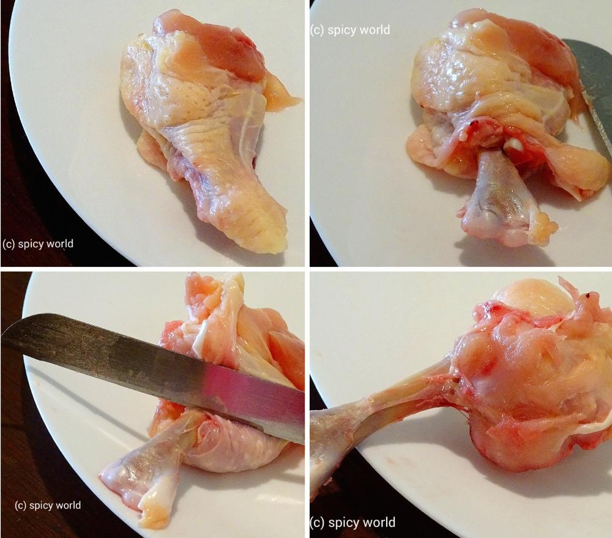
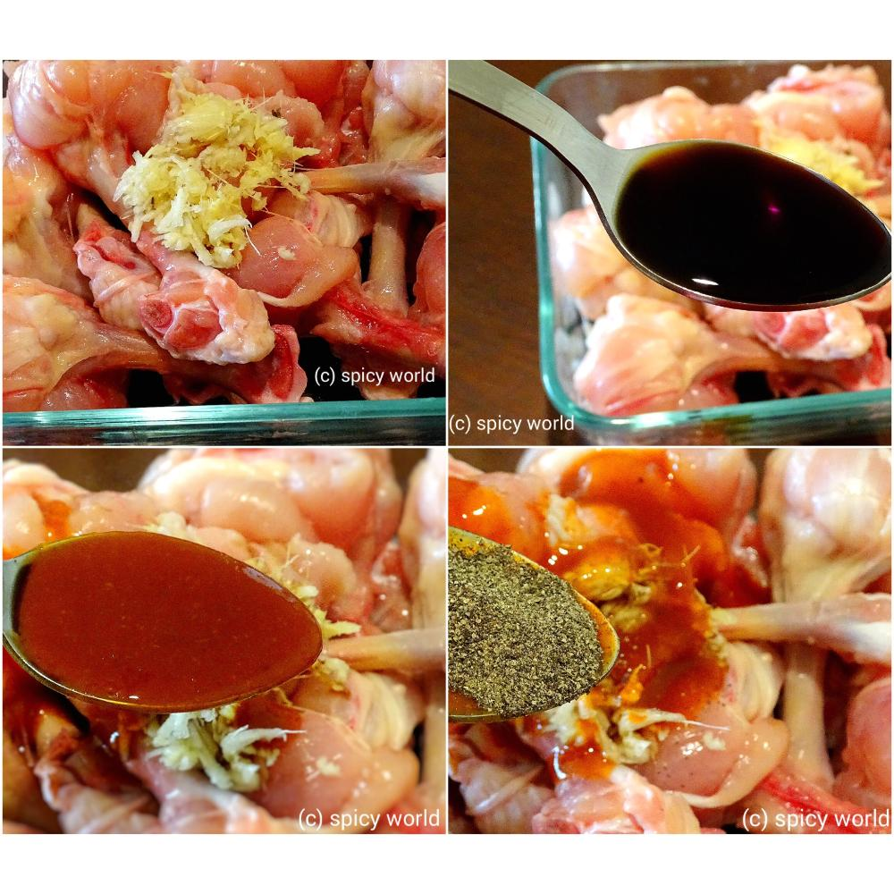
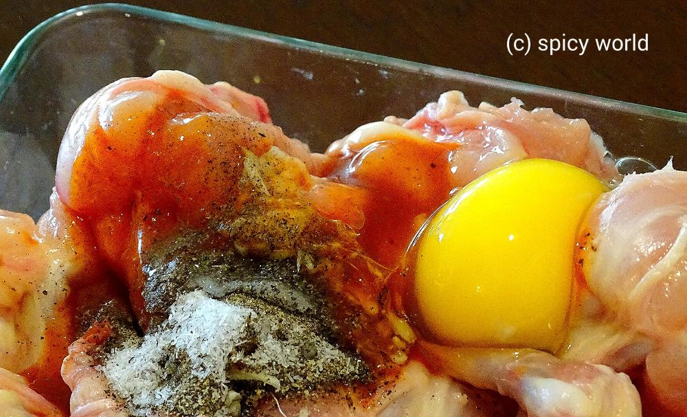
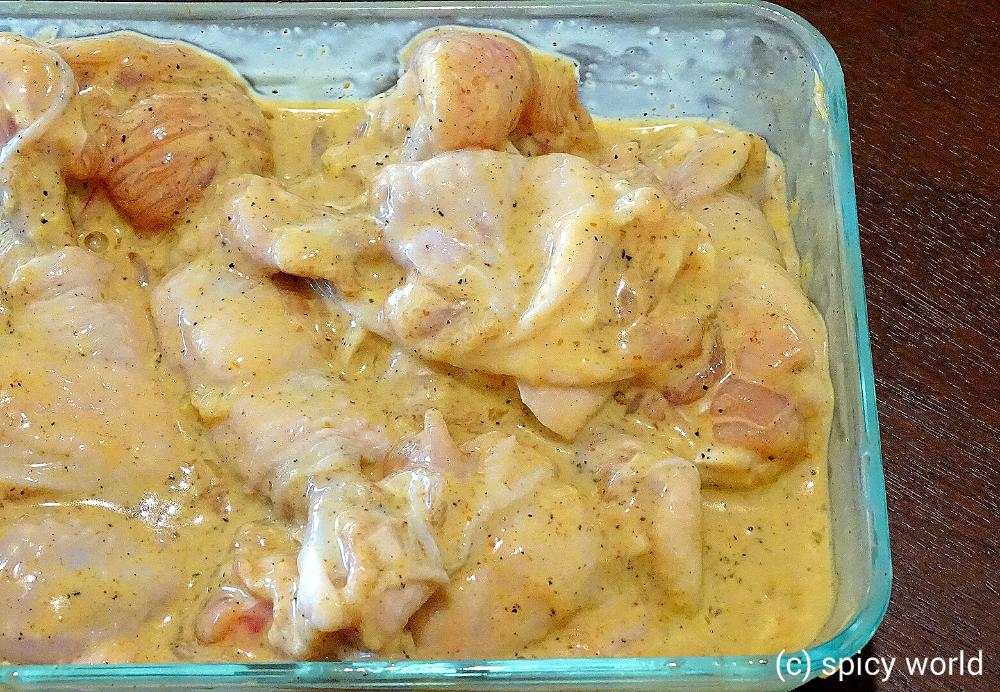
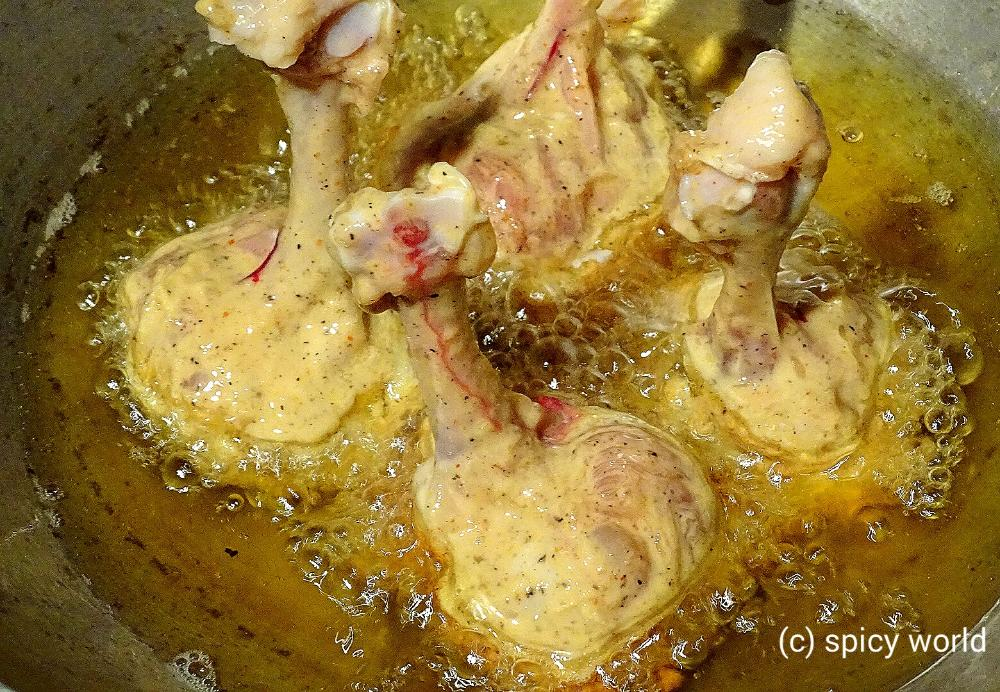
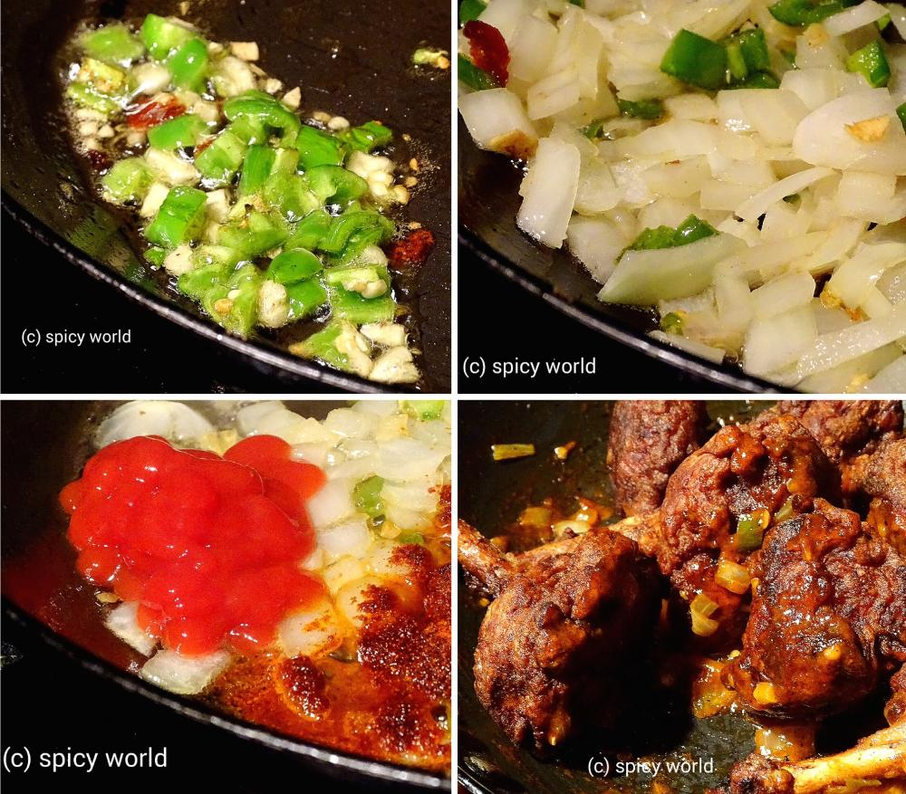

Chicken Lollipop

Chinese food is become very popular all over the world. In India this one is the most preferable starter item. The main trick here is to make the shape of lollipop from chicken wings. This is a bit lenthy process but the end result will satisfy you.

Ingredients
- Chicken wing drummets 10 pieces.
- 1 Teaspoon ginger and garlic paste.
- 1 egg.
- Half cup of Cornflour.
- 1 Teaspoon chopped ginger.
- 2 Teaspoons chopped garlic.
- 2 green chilies chopped.
- 2 Teaspoons black pepper powder.
- 2 Teaspoons soy sauce.
- 4 Teaspoons chilli garlic sauce (you can use red chilli sauce also).
- 2 Teaspoons tomato ketchup.
- 1 Teaspoon msg.
- 1 Teaspoon red chilli powder.
- Salt and sugar.
- Chicken stock 6 tablespoons.
- White oil for deep fry.

Steps
To make the lollipop you have to prepare the wings by turning the meat portion inside out.
First separate the flesh from the bone at the bottom portion.
Then scrape the flesh towards the top part with the help of your knife.
Lastly turn the meat portion inside out with the help of your hand. You will get the lollipop.

Now take a bowl, add the chicken pieces, 2 Teaspoons chili garlic sauce, soy sauce, ginger and garlic paste and black pepper powder.

Then add a egg, msg, 1 Teaspoon salt, pinch of sugar and cornflour.

Mix it with your hand very well. Keep it in the refrigerator for 3-4 hours.

Take a kadai or pan and heat lots of white oil for deep frying the chicken.
Add the chicken one by one into the hot oil like standing position and fry it very well. Dont overcrowd the vessel. Make the chicken very crispy. Remove them in a paper towel.

Now take a wok. Heat 3 Teaspoons oil in high flame.
Add chopped ginger, garlic and green chilies. Saute it for a minute.
Add chopped onion. Fry it for 3 minutes.
Then add the rest of chili garlic sauce, tomato ketchup, red chilli powder, and little salt. Mix it very well.
Add some chicken stock or warm water. Cook it for 4 minutes in high flame.
Now add the fried chicken into the sauce. Toss this very well.

Before adding the chicken the sauce should be thick not runny.
Don't cook the chicken pieces with the sauce for long time. Otherwise it will become soggy. It should be crispy.
Your chicken lollipop is ready ...
- Serve this hot with some salad and enjoy ...!!


Leave Your Comments